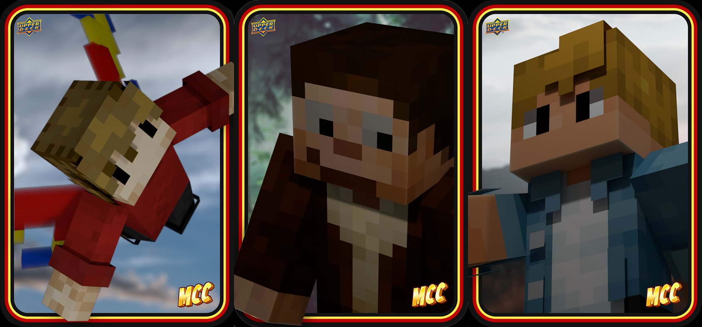

MCC (Minecraft Championship) is an olympics-style Minecraft tournament between a number of Minecraft Youtubers. A result of this is that there are points and statistics that can be scored and tracked, similar to baseball and other sports. An assignment we had in one of our Photoshop classes was to make a set of baseball (or equivalent) collector’s cards. I opted to go for MCC and chose some creators whose designs helped shape my view on environmental design, and built cards of their MCC statistics. To build these cards, I pulled their in-game character designs from a free archive, and set them up in blender in the poses seen below. I then rendered them out with real-world materials mapped to their character designs, and set some royalty-free stock images as the backdrops. As seen on the right, I laid out the backs of the cards in a table-like layout, and used their stats to fill out